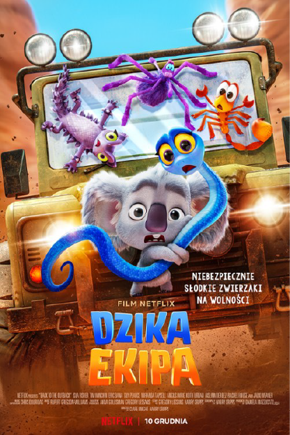

|  |
|---|
Dzika Ekipa (Back to the Outback) เนื้อเรื่องย่อ : กลุ่มเพื่อนสัตว์ที่ถูกนำมาเลี้ยงในสวนสัตว์กลางเมืองซิดนีย์ ตั้งแต่ยังเป็นเด็ก ประกอบไปด้วย "แมดดี้" งูพิษไทปัน , "แฟรงก์" แมงมุมพิษร้ายแรง, "โซอี้" กิ้งก่าหนาม , และ "ไนเจล" แมงป่องมรณะ ทั้งสี่เป็นสัตว์ป่ามีพิษร้ายแรงของออสเตรเลีย มีถิ่นฐานเดิมอยู่ในเอาท์แบ็ค ดินแดนทะเลทรายและแห้งแล้งใจกลางประเทศ รูปลักษณ์ภายนอกของพวกมันดูน่าเกลียดน่ากลัว บวกกับเป็นสัตว์ที่มีพิษ ทำให้ผู้คนหวาดผวา และเรียกพวกมันว่าสัตว์ร้าย ต่างกับ "พริตตี้บอย" หมีโคอาล่าสัตว์ประจำชาติออสเตรเลียอีกชนิดหนึ่ง ที่มีรูปร่างน่ารัก ขนปุกปุยนุ่ม ทำให้ได้รับการดูแลเป็นพิเศษ และได้รับความเอ็นดูจากนักท่องเที่ยวมากมาย สัตว์ร้ายทั้งหลายต่างรู้สึกน้อยเนื้อต่ำใจ อยากหนีออกจากสวนสัตว์ ไปตามหาดินแดนเอาท์แบ็คเพื่อตามหาครอบครัว และสัตว์ประเภทเดียวกันที่อาศัยอยู่ที่นั่น ทั้ง 4 จึงรวมตัวกันหนีออกจากสวนสัตว์ แต่บังเอิญก่อนจะหนีออกไปได้ โคอาล่าพริตตี้บอยพยายามขัดขวาง สุดท้ายเลยจับพลัดจับผลูหนีออกมาด้วยกัน ทั้ง 5 จึงร่วมกันผจญภัยไปในสถานที่ต่าง ๆ ที่ไม่คุ้นเคยเพื่อเดินทางไปยังเอาท์แบ็ค และต้องหลบหนีการจับกุมของ “แชซ” เจ้าหน้าที่สุดเฮี้ยบจากสวนสัตว์ที่ตามล่าพวกมันอีกด้วย
สามารถดูเต็มๆได้ที่ Netflix คลิกที่ลิ้งก์ Dzika Ekipa (Back to the Outback)
|
|---|